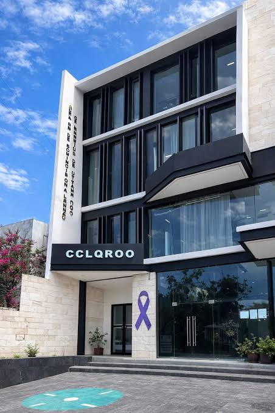

despido
DESPEDIDO

El despido injustificado ocurre cuando el empleador termina la relación laboral sin causa legal justificada. En México, la Ley Federal del Trabajo protege al trabajador y establece el pago de una indemnización que incluye tres meses de salario, prima de antigüedad y salarios caídos.
Si has sido despedido sin justificación, tienes un plazo de 60 días hábiles para reclamar ante la Junta de Conciliación y Arbitraje. Contar con un abogado laboral especializado aumenta significativamente tus posibilidades de obtener una compensación justa y rápida.
En Cancún y todo Quintana Roo, nuestros servicios legales te acompañan en cada etapa: desde la conciliación hasta el juicio. No dejes pasar tu derecho, la asesoría oportuna es clave para un resultado favorable.
La indemnización por despido injustificado se compone de:
- 3 meses de salario integrado.
- 20 días por año trabajado (prima de antigüedad).
- Salarios caídos desde el despido hasta la fecha de laudo.
Además, si el patrón no registra al trabajador ante el IMSS, las prestaciones pueden incrementarse.
La Junta de Conciliación y Arbitraje es la autoridad encargada de resolver los conflictos laborales. El procedimiento inicia con una etapa conciliatoria y, de no lograrse acuerdo, se abre el juicio ordinario.
Contar con pruebas documentales (contrato, recibos de nómina, constancias) es fundamental para acreditar la relación laboral y el salario.
El abogado laboral no solo representa al trabajador, también asesora a empresas para evitar litigios y cumplir con la normatividad. La prevención y el cumplimiento de la ley son la mejor inversión.
En nuestro despacho ofrecemos planes de defensa legal con honorarios claros y resultados medibles.
El salario base de cotización ante el IMSS determina el monto de las prestaciones. Es común que los patrones reporten un salario menor al real; esto afecta la indemnización. Nuestro equipo revisa cada caso para impugnar estas prácticas.
La prima de antigüedad equivale a 12 días de salario por cada año laborado. Se paga incluso en casos de renuncia voluntaria después de 15 años de servicio. Conoce tus derechos y exige lo que te corresponde.
El acoso laboral y la discriminación son causas de rescisión de la relación con responsabilidad para el patrón. Si sufres estas conductas, podemos iniciar una demanda por daño moral adicional a la indemnización.